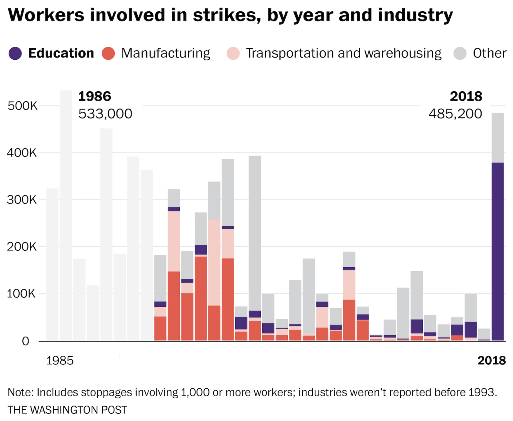
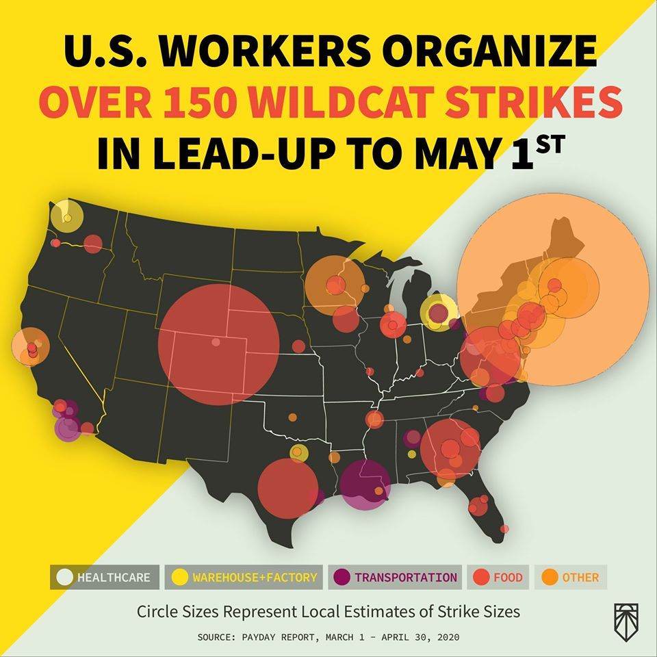

eachers in the United States are agents of history, and so are the bus drivers, cafeteria, staff, and custodial workers that also work as educators. In 2018, more US workers went on strike than in any previous year since 1986. During a period that spanned only a few months, more class struggled occurred than in the previous three decades. 
This essay takes this historical event as its object of study. With the aid of a GIS data visualization techniques, I aim to construct a diagram that represents the spatial and temporal relations within this event. Each statewide strike in 2018 occurred in a unique political, social, and cultural environment. And yet, the forces, motors, or agents in this tapestry of strike activity are undoubtably connected. The following diagram attempts to visualize the emergence of this phenomenon. Most of all this study is concerned with the concept of time. After presenting the diagram, I work through three common metaphors for describing the rapid spread of strike activity. Throughout this mental exercise, I am attempting to theorize the phenomenon of my diagram. I have not arrived at a conclusion as to how I think these strikes should be metaphorized, but it is my goal to contribute to the study of social movements. Hopefully this conceptual writing will generate conversations that may lead to a theory or concept apt for the historic achievement of public educators in 2018.
This map uses the figure of "Idles" to represent the height of each state. Idles is used by the Bueraue of Labor Statistics to measure to impact of work stoppages, and it is caculated by multiplying the number of workers times the number of days. Idles approximates the difficulty and level of risk of the different strikes, for the amount of people and the length of time are the variables that most impact the organization of a strike. Coordinating the actions of thousands of people is difficult, but doing so for multiple days is even more so.
From Feburary 2nd to May 3rd, almost 400,000 teachers refused to work. In some states, like Arizon, West Virginia, and Oklahoma, the strikes began with indefinite end dates. Others, like North Carolina and Kentucky, limited themselves to massive one day protests. Many of the teachers travelled each morning of the strike to their respective state legislature. These teachers would spend the full day chanting, organizing, and harassing anti-education represenatives. Some teachers stayed in their home district and did everything they could to support the students that would miss instruction. Usually, the overwhelming majority of teacher participation would force the school district superintendents to cancel school. In some places, however, the strike failed to gain majority support and the school districts attempted to hobble together a normal class day.
These four counties in Southern West Virginia (Mingo, Fayette, Wyoming, and Logan) are covered by a small teaching staff of 1500 educators. As anger was building at the state legislature, the teachers of these counties voted to paritipate in a protest they described as "Fed Up Friday." This was a one-day strike intended to test the confidence of the teachers. Furthermore, it was an opprotunity to gauage community support. While only 4 of 55 counties participated in this action, teachers in every county were watching.
Interminitten protests across the state of West Virginia eventually load to a firm strike date: Febuary 22nd. The various teacher unions of the state had united around this date, and there was no planned end to the strike. As the day approached, the teachers had no certainty about the unity of their strike. Many teachers prepared to drive to the capitol that morning with little clue how many others would join. But their fears were without warrant, because on the first day of the strike all 55 counties were closed across West Virginia. This inspired the slogan of their strike: "55 United." The strike lasted for two weeks, and it ended with a 5% raise for all public employees. Once word spread about the victory, the strike wave/virus/rebellion had begun.
While weeks separated the start of strikes in Kentucky and Oklahoma, teachers rapidly used this time to develop systems of organization that had previously not existed. These states lack the well-established infrastructures of teachers unions, so the prospect of holding a cross-state strike vote was difficult. In both Kentucky and Oklahoma, the lack of a clearly strike leaders introduced difficulties. In both instances, the outcomes of the strikes were unclear and did not lead to direct raises.
Arizona, Colorado, and North Carolina were the last states to participate in this flurry of strike action. Arizona waged a six-day battle against an anti-union legislature. Out of every strike, Arizona caused the highest levels of disruption. The teachers of Arizona caused a total of 486,000 idle days. Colorado and North Carolina dipped their toes within the strike water. They led impressive one day strikes across both states. In North Carolina, this involved a protest of over 120,000 educators.
The Strike Wave is perhaps the most common metaphor used for describing the widespread participation in strikes. Across headlines and between workers, wave seems to capture and explain something about the phenomenon. One view of this metaphor could be its oceanic associations. The energy and power of waves in the ocean have shaped most of the Earth’s face. While there is plenty to imagine about strikes while gazing into the ocean, I’m interested in approaching the wave from the perspective of physics.
Karen Barad is a quantum psychists and philosopher of science. Her book Meeting the Universe Halfway addresses the entanglement of knowledge and reality. She takes up questions that throw all matters of knowledge production, scientific or otherwise, into a chaotic arena of entanglements; and in doing so, offers a methodology for studying the boundaries that are produced between any “phenomena.” Barad draws heavily from her background in quantum physics, and she is particularly reliant upon theories of wave behavior. In chapter two of the book, Barad develops the scientific concept of diffraction into a methodology for the study of reality.
Diffraction is a phenomenon that is unique to wave behavior. Water waves exhibit diffraction patterns, as do sound waves, and light waves. Diffraction has to do with the way waves combine when they overlap and the apparent bending and spreading out of waves when they encounter an obstruction.
It is useful to imagine this description of a wave in physics as an explanation for the coordinated action of over 400,000 teachers across the United States. While it doesn’t provide a clue as to what initiated the strike wave, it does offer a view for examining the obstructions this wave encounters. What kept teachers in neighboring states with similar political and economic circumstances from joining the wave? In the states that failed to go beyond limited one day strikes (Kentucky and North Carolina), what stopped the wave’s inertia?
Barad’s diffractive methodology would encourage an analysis of the “patterns of difference.” Waves are unique from particles, according to the theories cited by Barad, for waves form diffraction patterns when an obstacle is encountered. Diffraction patterns are evidence of wave behavior, for they demonstrate the overlapping and spreading waves. These insights are not merely for understanding the behavior of matter in the universe, for Barad explicitly articulates a diffractive methodology.
While I was inspired by the colloquial uses of the term 'strike wave' to approach Barad’s quantum theories of entanglement, I found that her method requires refusing to describe the strike phenomenon as wave. To do so would form a boundary that separates it from the process of investigation. Instead, my study would need to examine the apparatuses used for studying this phenomenon, including the concept of the strike itself. In some capacity, there would need to be evidence of a diffraction pattern that is respondent to the effects of observation. A shift away from the metaphors (a form of representationalism), towards a richer empirical description of the practices, actions, and doings. Perhaps I will find that this strike wave is not metaphorical, and there is an evidential basis for describing the actions of these teachers as wave behavior.
Waves seem to capture something about the physics of this mass collective action, but it might not direct our attention to the right questions. And deciding which questions to ask is the main purpose of this essay. Labor organizer Jane McAlevey said in an interview on the so-called teacher strike wave,
Honestly, I don’t like the word ‘wave.’ Everybody uses it, but to me as an organizer I see that workers build worker agency through struggle. That’s what happened in West Virginia and Oklahoma. A wave sounds like a mysterious phenomenon that we don’t have any control over. It implies that the wave can suddenly go back out to sea, regardless of what we do. I don’t believe that. I believe that it’s up to us to figure out how to continue building powerful movements right now.
McAlevey’s concern for the choices we make will continue to be a concern I share throughout this essay.
The next metaphor often used for describing this phenomenon is best theoretically captured by Tony Sampson’s Virality. Viruses, outbreaks, fevers, and contagions are all words that have been used to describe strikes. They all circle around a fascination or paranoia about the spread of strikes from one city or industry to the next. Sampson may start from an epidemiological paradigm or a set of biological metaphors, but his goal is to develop an ontological account of contagiousness in an era of networked technologies.
He articulates the first question of the book as, what is it that actually spreads on a network?
Sampson turns to a Deleuzian informed reading of French sociologist Gabriel Tarde for social theories that help explain answer this question. Tarde is perhaps most famous for a molecular approach to social theory; one that examines the interactions between people as akin to the forces of chemistry. Samspson argues that the fundamental forces of imitation and invention emerge in contagious encounters. One of those forces theorized by Tarde is described as the imitative ray. As Sampson articulates, [Tarde] explains social relationality accordingly composed, decomposed, and recomposed by imitative radiations of desire, appropriated by social inventions, and coming together in the shape of shared beliefs, sentiments, and performances.”
The start of the strike virus in West Virginia is useful for applying his theory. The initial “Fed Up Friday” protest in the Southern counties produced a desire-event, which following Viraity, radiates out imitatively. Sampson would argue that would describe an example of what he describes as “social inventions.” The spread of the protest from county to county was a repetition of the previous act, but a series of social inventions occurs through this process that morphs what is being spread. On February 22, 2018, the “Fed Up Friday” protests innovated into an indefinite state-wide strike. As seen in the states that followed West Virginia, the social invention of the strike led to another set of desire-events (more strikes) which each magnified the desire for imitation and repetition.
The attention to complexity, to the intermingling of biological and social desires, and to the uniqueness of each encounter makes Virality useful for investigating and potentially stumbling upon an unseen, unspoken, or unwritten relations of influence. Affect theory deepens this analysis with an investigation into the felt intensities that propelled the teachers. As support for the strike grew, so too did a shared feeling between the participants. The in-person protests at the state capital contributed to the spread of these feelings, but so too did the social media posts that were shared between teachers.
Sampson’s concern for networks is keenly appropriate for the strike virus, for the technologies of traditional and new forms of media played a key role in spreading the strikes. Famously, the teachers of West Virginia and Oklahoma used Facebook groups to coordinate strike actions. While it was no doubt useful for determining the time teachers should arrive at their state capitol protest, it also contributed to a shared social atmosphere that was conducive to the spread of the strike virus. According to autobiographical accounts of the West Virginia strike, the Facebook group “West Virginia Public Employees UNITED” had over 20,000 members by February of 2018. In this group, educators shared content and ideas across the state. As Katie Endicott stated,
When a group of four legislators sponsored a bill that would change public employee insurance benefits from 80/20 coverage to 60/40 coverage, a teacher made a social media post that profiled these four ‘enemies of education.’ The post instantly went viral and created outrage and frustration.
As Endicott stated, the medium of Facebook served as a network for the viral spread of feelings and emotions.
But the metaphors and theories we use to explain social movement phenomenon are, of course, political. Is the increased complexity generated by of Virality worth the cost of minimizing the deliberate, conscious decisions made by humans who work as educators? Many of the concepts utilized by Sampson are intended to diminish the role of human agency. He says one of the main goals in his theorization is to counter the tendency to, "[determine] human agency rather than natural phenomena such as emotions, feelings, and affect, which spread, often unconsciously through social atmospheres (p. 9). As a way of deepening his analysis of networks, he turns to technology studies theories of media hypnosis and somnambulism. These are intended to explain the lack of a self-contained individual, and they suggest that human decision making is a dispersed phenomenon. These theories argue that networked technologies, and the contagions that spread across them, determine human behavior.
Should scholars want to cast the bravery of these teachers as an example of sleep walking? Is it right (either ethically or epistemologically) to argue that the strike fever was causing them to act independently of their decision to join the protest? This again raises the concern offered by Jane McAlevey. Did the teachers of West Virginia make a choice to go on strike? Do other people have a similar choice to make?
While I was contemplating my role as an academic that wants to study strikes, history returned. An actual biological virus has created a global pandemic. The uneven effects of this pandemic revealed the deep inequities within our systems of labor and consumption. From the slaughterhouse workers being forced to work in a deadly environment to the nurses and doctors that lack proper protective equipment, this virus has made the notion of “essential workers” a well discussed subject. We are now approaching a point where managers and owners will begin forcing their employees back to work while the virus continues to spread. Workers are facing a choice whether or not to return to work, and the potential for collective action is blooming. Already, workers in sectors deemed essential have collective refused to work until their demands were met. Bus drivers in Detriot, MI, for example, went on strike for a single day and demanded they no longer have to collect fares and interact with riders. An independent labor journalist outlet, Payday Report, has started recording and cataloguing strikes during the pandemic. Using the “COVID-19 Strike Wave Interactive Map” users can navigate through the over 170 recorded instances of strikes since March 1, 2020. The Sunrise Movement, a youth climate organization, released this visualization of the Payday Report data.
Clearly, Sampson was not wrong to investigate the entangled relationship of biological and social forces of contagion. While the billionaires would have us believe “we are all in this together,” it has become increasingly obvious that the social relations of capitalism and white supremacy are factors in the loss of life due to COVID-19. Poor black people in Southern parts of the US are being disproportionately killed by the virus, and the global increase in anti-Chinese racism is further proof that there is no clear line between the social and biological effects of the virus. Both the causes and effects of the virus are structured by the social and material histories of places struck by the virus, as well as the biophysical properties of the virus itself.
Sampson’s theories are useful for approaching this pandemic, but they are not useful for a political guide during this catastrophe. It is difficult to imagine how the viral spread of love, a case study in Sampson’s book, could generate an answer to the complex dilemmas of the capitalist mode of production, the sacrifice of so-called essential workers, and the need for a coordinated collective response during the active spread of a contagious disease. While Sampson studies “what” it is that spreads over networks, he does not offer theories for “how” to make things spread. And in a theoretical realm with diminished human agency, it is difficult to theorize strategy, intention, and action.
The spread of strike fever may be an appropriate response to the return to work order. Millions of workers may decide to refuse work independently of a deliberate strike campaign. It will be difficult to distinguish during this period what actually counts as a strike. Rather than allow spontaneity to control our hopes for a better future, there needs an organized and collective response to unsafe working conditions. The two largest teacher unions in the United States (NEA and AFT) are publicly declaring their opposition to a premature opening of schools. Every workforce will face unique dilemmas, and it will be necessary to formulate demands and tactics that spread of strike action into a set of instrumental changes.
Clocks… are different from calendars in that they notate not the span of days but the now. Clocks raise the question “What is to be done?” in a more intense way than do calendars.
John Durham Peters offers this insight in his attempt to craft an elemental theory of media. At first, I was drawn to the quote because of the obvious reference to Vladimir Lenin’s pamphlet “What is to be done?” whose publication preceded the Russian Revolution. As I thought more about the difference between clocks and calendars, I realized it was less about these particular media of measurement than it was about the comparison between them. Clocks are, after all, capitalist and colonial tools of management and conquest. Media of time, or visualizations of temporal relationships, have an immense rhetorical effect.
While operating below the surface, the concept of time has been a driving force in this essay. In the short amount of time from the start of the West Virginia strike to the end of the North Carolina strike (about 90 days), an enormous amount of organizing, political education, and consciousness building occurred. In fact, more of these practices occurred during this short period than in the previous three decades. From the perspective that wishes to know more about this phenomenon, I ask: what caused time to develop so rapidly? From the perspective of the web designer, I ask: how does my diagram capture the temporal dynamics of this phenomenon?
There is no best metaphor for collective action, but there is still a future that has yet to be written. In place of the Strike Wave and Strike Virus, I choose the Strike Rebellion. We all have choices to make in this life. We usually do not choose to be struck by a virus or overcome by a wave, but we can choose to rebel. I choose rebellion because our future depends on it. It is right to rebel because we have so little time left.